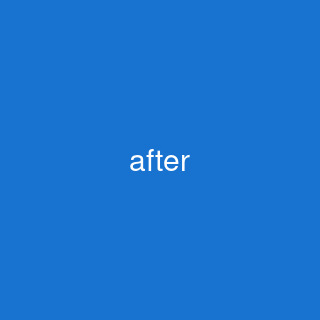
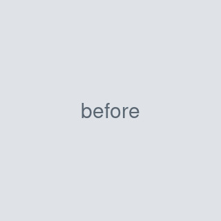
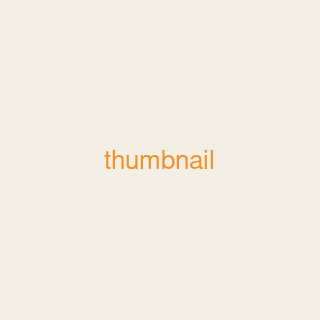

|
Lu Li I'm a second-year PhD student at Mila – Quebec AI Institute and Université de Montréal, advised by Pierre-Luc Bacon. My research centers on reinforcement learning and deep learning. Before Mila, I earned an M.S. in Electronic and Information Engineering from Tsinghua University, and a B.S. in Computer Science from Huazhong University of Science and Technology. |

|
ResearchDescribe your research interests in a sentence or two. Some papers are highlighted. |
|
  |
Title of Your Highlighted Paper
Your Name, Coauthor One, Coauthor Two Conference or Journal, 2026 project page / arXiv / code One or two sentences summarizing the paper. The thumbnail cross-fades from paper1_before.jpg to paper1_after.jpg when you hover over the row. |
|
 |
Title of Another Paper
Coauthor One, Your Name, Coauthor Two Conference or Journal, 2025 arXiv / bibtex One or two sentences summarizing the paper. |
Academic Service |
Conference Reviewer
|
|
Template based on Jon Barron's website. |